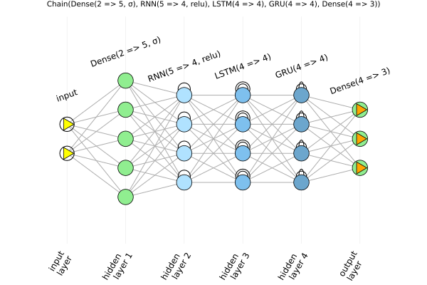

ChainGraph examples
The function chaingraph builds a ChainGraph of a neural network, with a vertex for each neuron and an edge for each connection between neurons of consecutive layers. This is what the plots are made of, and it can also be used directly.
using Flux
using Graphs
using ChainPlots
nnr = Chain(Dense(2 => 5, σ), RNN(5 => 4, relu), LSTM(4 => 4), GRU(4 => 4), Dense(4 => 3))
cg = chaingraph(nnr)ChainGraph with 22 neurons, 74 connections and 5 layers:
0: input layer (2,)
1: Dense(2 => 5, σ) (5,)
2: RNN(5 => 4, relu) (4,)
3: LSTM(4 => 4) (4,)
4: GRU(4 => 4) (4,)
5: Dense(4 => 3) (3,)If the first layer accepts inputs of any size, an input, or the shape of an input, is needed:
chaingraph(Chain(Conv((3, 3), 1 => 2), MaxPool((2, 2))), (6, 6, 1, 1))ChainGraph with 76 neurons, 320 connections and 2 layers:
0: input layer (6, 6, 1, 1)
1: Conv((3, 3), 1 => 2) (4, 4, 2, 1)
2: MaxPool((2, 2)) (2, 2, 2, 1)The Graphs.jl interface
A ChainGraph is a Graphs.AbstractGraph, so the functions of Graphs.jl work on it, as do packages built on it, such as GraphPlot.jl:
nv(cg), ne(cg)(22, 74)neighbors(cg, 1)5-element Vector{Int64}:
3
4
5
6
7Neuron properties
The properties of a neuron, listed in NODE_PROPERTIES, are given by nodeprops:
nodeprops(cg, 8)(layer_number = 2, layer_name = "RNN(5 => 4, relu)", layer_type = :RNN, index_in_layer = (1,), layer_center = 2.0, loc_x = 2.0, loc_y = 0.25, neuron_color = :lightskyblue1)and one property at a time by nodeprop, which can be broadcast over the vertices:
nodeprop.(Ref(cg), vertices(cg), :layer_number)22-element Vector{Int64}:
0
0
1
1
1
1
1
2
2
2
⋮
3
3
4
4
4
4
5
5
5Layer properties
The dimensions and names of the layers, starting with the input layer, are given by layer_dimensions and layer_names:
layer_dimensions(cg)6-element Vector{Tuple}:
(2,)
(5,)
(4,)
(4,)
(4,)
(3,)layer_names(cg)6-element Vector{String}:
"input layer"
"Dense(2 => 5, σ)"
"RNN(5 => 4, relu)"
"LSTM(4 => 4)"
"GRU(4 => 4)"
"Dense(4 => 3)"Plotting
A ChainGraph is plotted with Plots.jl:
using Plots
plot(cg, title="$nnr", titlefontsize=7)